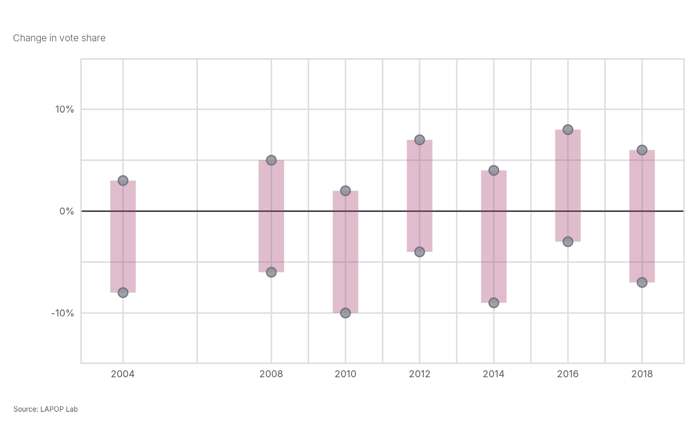

LAPOP Floating Bar Graph
lapop_float.RdThis function creates a floating range plot using LAPOP formatting. Each x-axis group displays its minimum-to-maximum range with all unit-level observations overlaid as points.
Usage
lapop_float(
data,
xvar = data$xvar,
outcome_var = data$prop,
lower_bound = data$lb,
upper_bound = data$ub,
ymin = NULL,
ymax = NULL,
lang = "en",
main_title = "",
source_info = "LAPOP",
subtitle = "",
color_scheme = c("#A43D6A", "#8C8F98"),
percentages = TRUE,
ref_line = 0,
note_text = "",
range_alpha = 0.34,
range_width = 9,
point_size = 2.9,
x_breaks = NULL,
y_breaks = NULL,
x_pad = 1.15,
y_pad = 5
)Arguments
- data
Data frame containing unit-level values and group ranges.
- xvar, outcome_var, lower_bound, upper_bound
Plot components. Defaults use the `xvar`, `prop`, `lb`, and `ub` columns in `data`.
- ymin, ymax
Numeric or `NULL`. Y-axis limits. `NULL` calculates a limit from the data.
- lang
Character. Language used for the default source text. Options are `"en"`, `"es"`, and `"fr"`.
- main_title
Character. Plot title.
- source_info
Character. Source information. The default `"LAPOP"` prints the localized LAPOP Lab source line.
- subtitle
Character. Plot subtitle.
- color_scheme
Character vector of two colors for ranges and points.
- percentages
Logical. If `TRUE`, append percent signs to y-axis values. Default is `TRUE`, consistent with other LAPOP figures.
- ref_line
Numeric or `NULL`. Horizontal reference line. Use `NULL` to omit it.
- note_text
Character. Optional note appended below the source line.
- range_alpha
Numeric. Transparency of the range bars.
- range_width
Numeric. Width of the range bars.
- point_size
Numeric. Size of individual-observation points.
- x_breaks, y_breaks
Numeric vectors or `NULL`. Axis break points.
- x_pad, y_pad
Numeric. Additional axis padding in data units.
Author
Robert Vidigal, robert.vidigal@vanderbilt.edu
Examples
election_plot <- data.frame(
xvar = rep(c(2004, 2008, 2010, 2012, 2014, 2016, 2018), each = 2),
prop = c(-8, 3, -6, 5, -10, 2, -4, 7, -9, 4, -3, 8, -7, 6),
lb = rep(c(-8, -6, -10, -4, -9, -3, -7), each = 2),
ub = rep(c(3, 5, 2, 7, 4, 8, 6), each = 2)
)
lapop_float(election_plot, subtitle = "Change in vote share")
